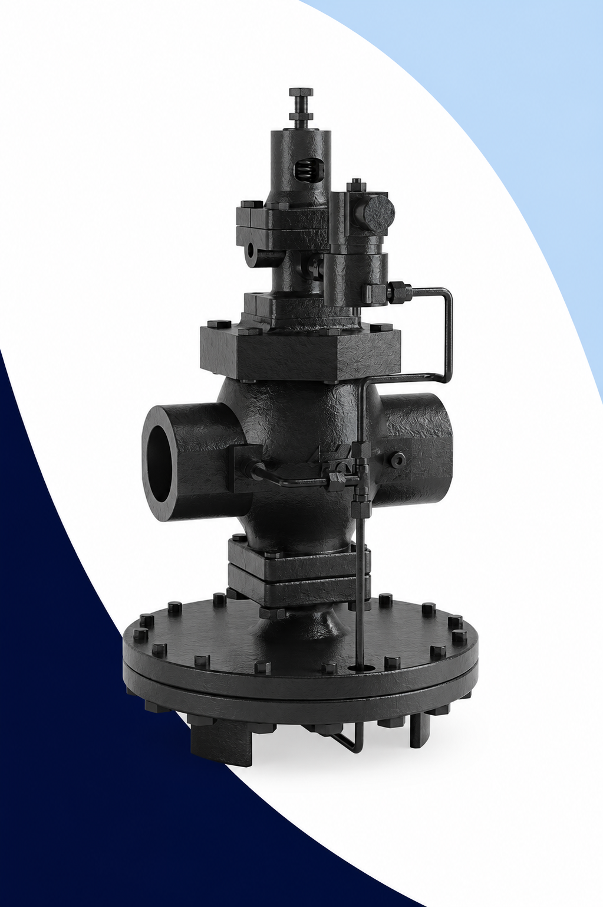

Reguladores de Presion
Válvulas Reguladoras y Reductoras de Presión para Vapor, Agua y Aire Comprimido
En Defany Industrial distribuimos válvulas reguladoras de presión y válvulas reductoras de presión para aplicaciones industriales exigentes. Contamos con las marcas Armstrong y Vayremex, dos referencias de primer nivel en el control de presión industrial en México y el mundo.
Un regulador de presión —también conocido como válvula reductora de presión, reguladora de vapor o reductora de línea— es el componente que garantiza que el fluido llegue al equipo consumidor a la presión correcta, independientemente de las variaciones en la presión de suministro o los cambios en el caudal demandado por el proceso.
Su selección correcta impacta directamente en la seguridad del proceso, la eficiencia energética de la planta y la vida útil de equipos conectados aguas abajo: intercambiadores de calor, autoclaves, prensas, equipos de cocimiento, secadores industriales y cualquier consumidor de vapor, agua caliente o aire comprimido a presión controlada.

¿Qué es una Válvula Reguladora de Presión?
Una válvula reguladora de presión (también denominada válvula reductora de presión o reductor de presión) es un dispositivo automático de control que recibe un fluido a alta presión y lo entrega a una presión inferior, estable y controlada, sin importar las variaciones del suministro o los cambios en la demanda del proceso.
A diferencia de una válvula de seguridad —que actúa solo ante sobrepresión— o de una válvula de control motorizada —que requiere señal eléctrica—, el regulador de presión es un dispositivo autónomo y autocontenido: muestrea continuamente la presión aguas abajo mediante un diafragma o pistón y ajusta la apertura del obturador para mantener el set point deseado sin necesidad de energía externa.
Tipos principales de reguladores
El propio fluido de salida actúa sobre el diafragma que controla el obturador. Son compactos, económicos y adecuados para rangos de caudal moderados con tolerancias de regulación del 10-15%. Ideal para vapor de baja carga y servicios auxiliares.
Incorporan un piloto: una válvula pequeña que amplifica la señal de presión aguas abajo y la usa para controlar la apertura del cuerpo principal. Ofrecen mayor precisión (1-3%), mayor caudal y mejor respuesta ante variaciones rápidas de demanda. Son la elección preferida para instalaciones críticas y grandes caudales.
Una válvula reguladora de presión mantiene la presión aguas abajo constante e independiente de las variaciones en la presión de entrada y del caudal demandado.
¿Cómo Funciona una Válvula Reductora de Presión?
El funcionamiento de un regulador de presión se basa en el equilibrio de fuerzas entre el resorte de referencia y el diafragma expuesto a la presión de salida. Cuando la presión aguas abajo sube, el diafragma cierra el obturador; cuando baja, el resorte lo abre.
El fluido proveniente de la caldera, compresor o red de distribución entra al regulador por el lado de alta presión. Esta presión puede variar según la demanda del sistema.
La presión aguas abajo (P2) actúa sobre el diafragma. El resorte de referencia —ajustado mediante el tornillo de set point— ejerce la fuerza opuesta. Cuando P2 sube, el diafragma cierra el obturador; cuando P2 cae, el resorte lo abre.
El equilibrio entre ambas fuerzas determina la apertura del obturador, que se ajusta de forma continua y proporcional para mantener P2 constante.
El fluido llega al proceso a la presión del set point, independientemente de las fluctuaciones en P1 o los cambios en el caudal demandado aguas abajo.
Beneficios del Control de Presión Industrial
Una válvula reguladora de presión correctamente seleccionada e instalada genera retorno de inversión inmediato a través de ahorro energético, mayor vida de equipos y reducción de paros.
Ahorro de energía
Al operar los equipos a la presión mínima necesaria —en lugar de la presión máxima de la red— se reduce el consumo de vapor o energía comprimida. Estudios de Armstrong indican ahorros de hasta 20% en el consumo de vapor con reguladores correctamente dimensionados.
Protección de equipos
Los procesos y equipos aguas abajo operan dentro de su rango de diseño. Se eliminan los picos de presión que deterioran empaques, intercambiadores, autoclaves y maquinaria de proceso, extendiendo su vida útil.
Calidad del producto
En procesos de calor como pasteurización, cocimiento o secado, la presión constante garantiza temperatura estable, resultando en mayor uniformidad y calidad del producto terminado.
Reducción de fugas
La operación a menor presión reduce las fugas en empaques, sellos y conexiones del sistema. Esto se traduce en menor desperdicio de fluido y reducción de riesgos de seguridad operacional.
Menor ruido y vibraciones
Las tuberías operando a presión excesiva generan ruido y vibraciones que aceleran el desgaste de soportes, soldaduras y equipos. Un regulador elimina esta fuente de vibración.
Menor mantenimiento
Al reducir la presión de operación y los picos transitorios, se extienden los intervalos de mantenimiento preventivo de válvulas, trampas de vapor, empaques y uniones del sistema.
Aplicaciones Industriales de los Reguladores de Presión
Los reguladores de presión se utilizan en cualquier proceso donde un fluido deba entregarse a una presión inferior, estable y controlada. Algunos de los usos más frecuentes son:
Reducción de presión de vapor de caldera (8–16 bar) a la presión de trabajo de equipos de proceso (1–4 bar). Aplicación más frecuente en plantas industriales.
Derivación desde una línea maestra de alta presión hacia zonas de baja presión: herramientas neumáticas, instrumentación, controles y cabinas de pintura.
Reducción de presión de red domiciliaria o industrial antes de equipos que requieren presión controlada: intercambiadores, circuitos de enfriamiento, sistemas de riego y humectación.
Control de presión de gas natural, CO₂ o nitrógeno en procesos donde el flujo constante a presión regulada es crítico para la calidad del producto.
Regulación en sistemas de recuperación de condensado donde el vapor flash generado debe controlarse antes de retornar al desgasificador.
Procesos de pasteurización, esterilización, cocimiento y secado donde la presión constante garantiza temperatura uniforme y calidad del producto.
Reducción a presiones de esterilización (1–2 bar) desde redes generales, garantizando condiciones exactas de temperatura para autoclaves y equipos de esterilización.
Reducción de presión de agua potable en instalaciones de múltiples pisos, zonas húmedas y sistemas de rociadores contra incendio que requieren presión diferenciada.
Armstrong GP‑2000 — Válvula Reguladora de Presión
El Armstrong GP‑2000 es el regulador de presión para vapor de mayor trayectoria y confiabilidad en la industria. Su diseño de diafragma de gran superficie y construcción robusta lo han posicionado como la solución de referencia para sistemas de vapor industrial en todo el mundo.
Diseño comprobado para sistemas de vapor industrial
El GP‑2000 es un regulador de acción directa con diafragma de gran área efectiva, lo que le permite ofrecer excelente sensibilidad y regulación precisa incluso en condiciones de baja presión diferencial. Su cuerpo compacto simplifica la instalación y facilita el mantenimiento en campo.
Está diseñado para vapor saturado aunque también aplica a agua caliente y otros fluidos compatibles dentro de sus rangos de presión y temperatura documentados. La válvula interna de asiento angular reduce la caída de presión interna y aumenta la capacidad de paso.
Variantes GP‑2000L, GP‑2000R y Familia GP
La línea GP de Armstrong ofrece variantes especializadas para cubrir diferentes rangos de presión, caudal y condiciones de servicio. Cada modelo está optimizado para una aplicación específica dentro del portafolio de control de presión de vapor.
GP‑2000
Modelo estándarEl modelo base de la familia GP. Regulador de acción directa con diafragma de gran área para vapor saturado y agua caliente. Amplia disponibilidad de tamaños y rangos de presión de salida. Solución estándar para la mayoría de las aplicaciones industriales de vapor.
- Tamaños ½" a 4"
- Vapor y agua caliente
- Múltiples rangos de presión
GP‑2000L
Baja presiónVariante del GP‑2000 optimizada para rangos de baja presión de salida. Su resorte de referencia de menor rigidez permite un ajuste más fino en rangos de presión reducidos, donde el modelo estándar podría perder sensibilidad. Ideal para procesos que requieren presión de salida muy baja.
- Resorte de baja rigidez
- Ajuste fino en baja presión
- Mayor sensibilidad al set point
GP‑2000R
Rango extendidoVariante con resorte de rango extendido para cubrir el ajuste en un rango de presión de salida mayor con un solo modelo. Reduce el inventario necesario cuando la instalación tiene múltiples puntos de regulación a diferentes presiones. También aplica donde la presión de set point se ajusta con frecuencia.
- Rango de ajuste ampliado
- Un modelo — múltiples set points
- Flexibilidad en configuración
Familia GP
Otros modelosAdemás del GP‑2000, la familia GP incluye modelos pilotados y variantes para presión de entrada muy alta, materiales especiales o configuraciones de instalación particulares. Consulte con nuestro equipo técnico la variante óptima para su aplicación específica de vapor, agua o gas.
- Modelos pilotados disponibles
- Materiales especiales bajo pedido
- Consulta técnica sin costo
Reguladores de Presión Vayremex
Vayremex es una marca de referencia en reguladores de presión pilotados para vapor, agua y aire. Su portafolio cubre desde reguladores de acción directa hasta modelos servo-asistidos de alta capacidad para aplicaciones industriales exigentes en México.


Vayremex 469 — Regulador Pilotado de Presión
El modelo 469 es el regulador pilotado estándar de la línea Vayremex. Combina un cuerpo principal de gran capacidad con un piloto de acción directa que garantiza alta precisión de regulación y respuesta estable ante variaciones de demanda. Es la solución de referencia para sistemas de vapor a gran caudal donde se requiere presión aguas abajo constante y confiable.
El diseño pilotado del 469 logra una presión de salida mucho más estable que un regulador de acción directa equivalente, especialmente ante cambios rápidos de carga. Su piloto exterior permite ajuste y mantenimiento independiente del cuerpo principal, facilitando el servicio en campo.
Vayremex 469A — Regulador Pilotado con Piloto Ajustable
El 469A es una variante del 469 que incorpora un piloto con ajuste externo de set point más accesible, diseñado para instalaciones donde el punto de regulación se modifica con frecuencia o donde se requiere ajuste sin interrumpir el proceso. Es la evolución del 469 para operaciones de mayor flexibilidad operativa.
Su cuerpo y capacidad hidráulica son equivalentes al modelo base 469, pero la configuración del piloto facilita el ajuste in situ por parte del operador o técnico de mantenimiento sin necesidad de herramienta especializada.


Vayremex 47AP — Regulador Pilotado de Alta Precisión
El 47AP es el modelo de la línea Vayremex orientado a alta precisión de regulación. Su piloto de diseño refinado minimiza el droop y mantiene la presión de salida dentro de un rango muy estrecho incluso ante variaciones importantes de caudal. Es la elección correcta para procesos donde la calidad del producto depende directamente de la estabilidad de presión del fluido de proceso.
Aplicaciones típicas incluyen equipos de calentamiento de alta sensibilidad, procesos farmacéuticos, laboratorios industriales, sistemas de esterilización y cualquier proceso donde la tolerancia de presión sea crítica.
Vayremex 43AM — Regulador de Acción Directa
El 43AM es el regulador de acción directa de la línea Vayremex. Sin piloto exterior, es más compacto y económico que los modelos pilotados 469 y 47AP. Su diseño sencillo lo hace fácil de mantener y especialmente confiable en aplicaciones donde la precisión no es crítica pero sí la robustez y la disponibilidad de partes.
Es la solución preferida para servicios auxiliares, líneas secundarias de vapor, agua a presión reducida y sistemas de aire comprimido donde el caudal no es muy elevado y se acepta una tolerancia de regulación moderada (10-15% de droop).

Comparativa de Modelos
Use esta tabla para identificar el modelo más adecuado a su aplicación según fluido, tipo de acción, precisión y rango de presión.
| Modelo | Marca | Tipo de acción | Fluido | Precisión | Caudal | Mejor para |
|---|---|---|---|---|---|---|
| GP‑2000 | Armstrong | Acción directa | Vapor · Agua | Media | Medio | Aplicación general de vapor |
| GP‑2000L | Armstrong | Acción directa | Vapor · Agua | Media-Alta | Medio | Baja presión de salida |
| GP‑2000R | Armstrong | Acción directa | Vapor · Agua | Media | Medio | Set point variable / rango amplio |
| 469 | Vayremex | Pilotado | Vapor · Agua · Aire | Alta | Alto | Gran caudal de vapor industrial |
| 469A | Vayremex | Pilotado | Vapor · Agua · Aire | Alta | Alto | Ajuste frecuente de set point |
| 47AP | Vayremex | Pilotado alta precisión | Vapor · Agua | Muy alta | Alto | Procesos críticos y farmacéuticos |
| 43AM | Vayremex | Acción directa | Vapor · Agua · Aire | Media | Bajo-Medio | Servicios auxiliares y secundarios |
Industrias donde se Utilizan
Los reguladores de presión Armstrong y Vayremex están presentes en prácticamente todas las industrias que utilizan vapor, agua caliente o aire comprimido como fluido de proceso.
Accesorios y Refacciones para Reguladores de Presión
Defany Industrial no solo suministra los reguladores de presión: también mantiene disponibilidad de refacciones y kits de reparación para los modelos Armstrong y Vayremex que distribuimos. Esto reduce el tiempo de paro cuando un regulador requiere mantenimiento.
La mayoría de los reguladores de presión son reparables en campo. Con el kit de refacciones correcto y las instrucciones del fabricante, un técnico de mantenimiento puede restaurar el regulador a sus condiciones originales de operación en pocas horas, evitando el costo de reemplazar el equipo completo.
- Filtro-separador aguas arriba
- Manómetro de presión de entrada y salida
- Válvula de bypass (emergencia)
- Trampa de vapor (condensado)
- Válvula de seguridad aguas abajo
- Válvulas de seccionamiento (pre y post regulador)
- Mangueras de conexión piloto
- Soportes y bases de instalación
Guía para Seleccionar la Válvula Reguladora Correcta
Seleccionar mal un regulador de presión genera problemas de regulación, desgaste prematuro o presión inestable aguas abajo. Use estos 6 pasos para identificar el modelo correcto.
Identifique el fluido
Determine si el regulador trabaja con vapor saturado, vapor sobrecalentado, agua caliente, agua fría, aire comprimido, gas combustible u otro fluido. El fluido determina los materiales del cuerpo, diafragma y empaques, así como las marcas y modelos aplicables.
Defina la presión de entrada (P1)
La presión de suministro en el punto de instalación del regulador. Debe conocer tanto la presión normal como la presión máxima posible (pico de presión), ya que el regulador debe soportarla sin daño. Esta presión determina la clase de presión del cuerpo del regulador.
Defina la presión de salida requerida (P2 — set point)
La presión a la que deben operar los equipos aguas abajo. Verifique que el set point deseado esté dentro del rango de ajuste del modelo seleccionado. También determine la tolerancia de presión aceptada: un proceso de alta sensibilidad requiere modelo pilotado.
Calcule el caudal máximo requerido
El regulador debe poder suministrar el caudal máximo demandado por el proceso sin que la presión de salida caiga por debajo del límite aceptable. Un regulador sobredimensionado causa inestabilidad (caza); uno subdimensionado limita el proceso. Use los coeficientes Cv del fabricante para el cálculo.
Determine la temperatura máxima
La temperatura del fluido afecta la selección del material del diafragma y los empaques. Para vapor, la temperatura está determinada por la presión; para agua caliente y aceites térmicos, verifique que los materiales internos sean compatibles con la temperatura de operación.
Seleccione el tipo de conexión y tamaño
Determine el tamaño nominal de la tubería y el tipo de conexión: NPT (rosca) o bridada (clase ANSI). El tamaño del regulador no siempre coincide con el tamaño de la tubería — a menudo se instala reducido (con reducciones aguas arriba y abajo) para optimizar la autoridad de control.
¿No está seguro de qué modelo elegir? Nuestro equipo técnico puede ayudarle a seleccionar el regulador correcto con base en los datos de su proceso.
Solicitar asesoría de selecciónConfigurador de Válvulas Reguladoras de Presión
Complete los datos de su proceso y genere la solicitud técnica lista para enviar a cotización.
Preguntas Frecuentes
En la práctica industrial ambos términos se usan para el mismo tipo de dispositivo: un componente que reduce la presión de un fluido de un nivel alto a uno menor y lo mantiene estable. La norma ISA usa "regulador de presión" para el concepto genérico; en algunos países hispanohablantes se prefiere "reductora de presión". Técnicamente, un regulador también puede mantener presión constante aguas arriba (regulador de contrapresión), pero en el ámbito industrial la mayoría son reductores.
Un regulador pilotado usa una válvula pequeña auxiliar (piloto) para amplificar la señal de control de presión aguas abajo, lo que permite operar el cuerpo principal con mayor precisión y mayor caudal que un regulador de acción directa equivalente. Use un regulador pilotado cuando: la tolerancia de presión de salida es estricta (±5% o menor), el caudal demandado es alto, el proceso varía mucho la demanda rápidamente, o se requiere operación estable a presiones muy bajas. Los modelos Vayremex 469, 469A y 47AP son reguladores pilotados.
Las causas más frecuentes son: (1) Diafragma roto o deteriorado —el regulador no regula o deja pasar fluido por el eje—; (2) Empaques y juntas desgastados —fugas externas—; (3) Golpe de ariete —daño mecánico por transitorio de presión hidráulica—; (4) Sobredimensionamiento —el regulador opera casi cerrado y "caza" alrededor del set point—; (5) Suciedad en el asiento —partículas que impiden el cierre hermético—; (6) Resorte fatigado o roto —incapaz de mantener el set point—. La mayoría de estas fallas se resuelven con el kit de refacciones adecuado.
En la mayoría de los casos, los reguladores de presión son totalmente reparables. Los fabricantes como Armstrong y Vayremex diseñan sus equipos con ese objetivo: los componentes internos (diafragma, empaques, asientos, resortes) se fabrican como refacciones independientes y pueden reemplazarse en campo. El cuerpo del regulador raramente se daña si se opera dentro de sus especificaciones. Solo se recomienda el reemplazo completo cuando el cuerpo muestra corrosión severa, erosión del asiento irreparable o daño estructural por golpe de ariete.
Para una cotización precisa se requieren: fluido (vapor, agua, aire, etc.), presión de entrada máxima (P1), presión de salida requerida (P2), temperatura del fluido, caudal máximo (en kg/h para vapor o m³/h para líquidos y gases), tipo de conexión (NPT o bridada), diámetro nominal y cantidad. También puede usar nuestro configurador en esta página para generar la solicitud automáticamente.
El Armstrong GP‑2000 está diseñado principalmente para vapor saturado. Sin embargo, también aplica para agua caliente y otros fluidos no corrosivos compatibles con los materiales del cuerpo y los sellos internos. No está diseñado para aire comprimido como aplicación primaria; para este fluido los modelos Vayremex 469 o 43AM son más adecuados. Consulte con nuestro equipo técnico para validar la aplicación específica de agua o gas con el GP‑2000.
Ambos son reguladores pilotados de presión con el mismo cuerpo y capacidad hidráulica. La diferencia está en el piloto: el 469A incorpora un piloto con ajuste externo de set point más accesible, permitiendo modificar la presión de salida sin herramienta especializada y sin detener el proceso. El 469 estándar requiere acceso al piloto para el ajuste, lo cual puede ser más laborioso. Si su proceso requiere cambiar frecuentemente la presión de salida, el 469A es la mejor opción.
Siempre que el fluido de suministro pueda contener partículas sólidas, incrustaciones, óxido de tubería o cualquier contaminante sólido. Un filtro-separador aguas arriba del regulador protege el asiento y el obturador de erosión y obstrucción, extendiendo significativamente la vida del equipo. Para vapor, el filtro-separador también retiene el agua líquida arrastrada que podría causar golpe de ariete. Es una buena práctica de ingeniería instalar siempre un filtro antes del regulador.
El droop (o caída de presión de salida) es la diferencia entre la presión de salida con caudal cero y la presión de salida con caudal máximo. Todo regulador presenta cierto droop porque necesita mayor apertura del obturador para aumentar el caudal, y esa mayor apertura equivale a una presión diferencial ligeramente mayor aguas arriba-abajo. Los reguladores de acción directa tienen droop mayor (8-15%); los pilotados lo reducen a 1-5%. Importa cuando el proceso requiere presión estable independientemente del caudal consumido.
Los fabricantes recomiendan inspección visual cada 6 meses y revisión general (desmontaje, verificación de diafragma, empaques y asiento) cada 2-4 años, dependiendo del servicio. En procesos severos (alta temperatura, alta presión, fluidos contaminados o velocidad de flujo alta), la frecuencia debe aumentar. La señal más común de que el regulador requiere mantenimiento es inestabilidad de la presión de salida (oscilaciones), incapacidad de mantener el set point o fugas externas. Con refacciones originales y procedimiento correcto, el mantenimiento es sencillo.
¿Necesita una Válvula Reguladora de Presión?
Cuéntenos los datos de su proceso. Nuestro equipo técnico seleccionará el modelo correcto de Armstrong o Vayremex para su aplicación, con soporte de refacciones y kits de reparación.